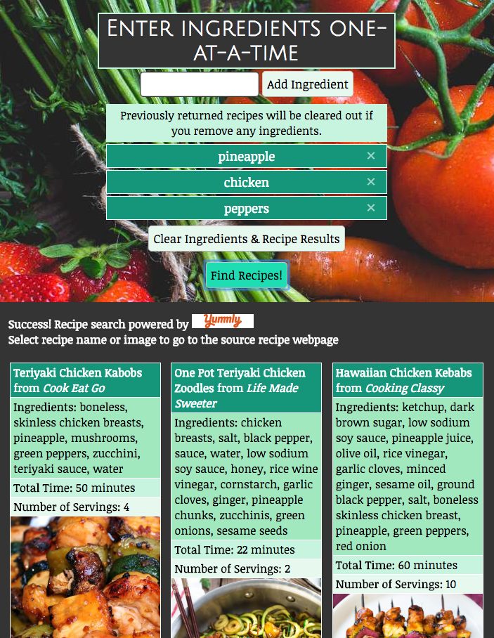
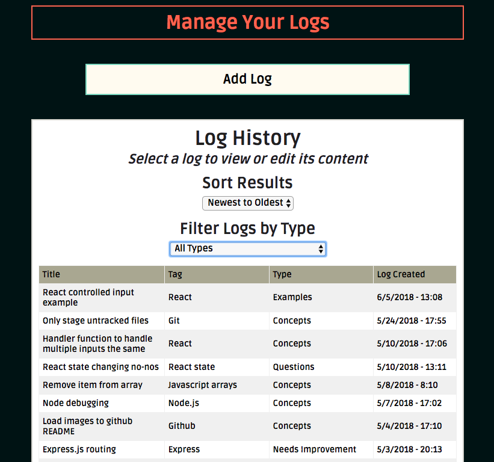
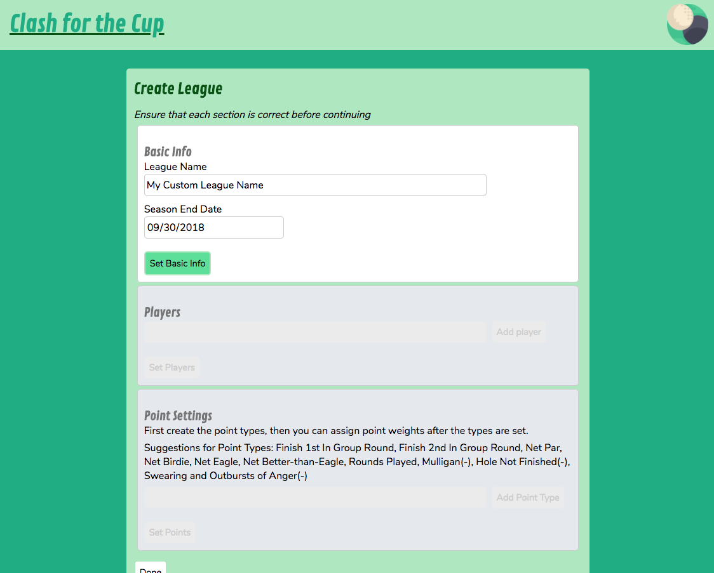
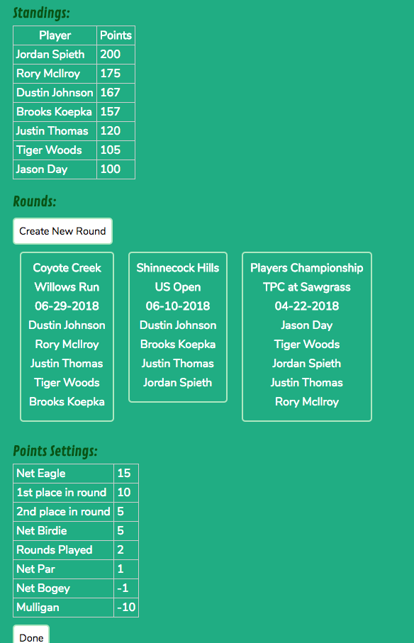

About
Welcome! My name is Jason and I’m a web developer based in the greater-Seattle area. As difficult as it can sometimes be, I find immense satisfaction in programming due to the never-ending challenges it presents, and how rewarding it is to overcome those challenges and help solve problems that make life more efficient and enjoyable.
Before becoming a developer most of my work background was in account management and client service. I've always enjoyed the chance to work with clients in service-oriented roles as it has allowed me to hone my people skills and become a better teacher, but often I would find myself at the intersections where client service and technology meet, and eventually my technical and creative curiosty led me to the realization that I would like to dedicate my career to learning more about technology, becoming a better programmer and helping to bridge the gap between tech and non-tech environments. I'm driven to learning new things and better methods and it's exciting knowing that there's endless knowledge and opportunities to explore in the realm of web and software development.
When I’m not programming, you can probably find me reading graphic novels or sci-fi/fantasy books, hiking, playing music or trying to learn a new board game. Please reach out if you have any questions, would just like to chat, or have any projects you would like to team-up on. Cheers!
Projects
Recipe Revelation
Github repo
- HTML
- CSS
- JavaScript
- jQuery
- External API Integration
- A11y Friendly
- Responsive Design
A reverse-recipe finder that allows you to find popular online recipes by searching for specific ingredients. Great for anybody that's ever wondered what meals can be made from the ingredients available in the kitchen, or just for uninspired chefs that want to find new and creative recipes consisting of particular ingredients. The site is powered by Yummly.com's recipe APIs.
Log and Learn
Github repo
- HTML
- CSS
- JavaScript
- jQuery
- Express/Node
- MongoDB/Mongoose
- RESTful API
- Mocha
- Chai/Chai-http
- Heroku
- TravisCI
- A11y Friendly
- Responsive Design
A simple and easy-to-use learning aid that allows users to record log entries that detail reflections and progress made when learning a new subject. Each log entry can be categorized under a specific type of post (e.g. Concepts, Questions, Needs Improvement, etc.), which allows for easy organization and filtering.
Clash for the Cup
Github repo
- HTML
- CSS
- JavaScript
- React
- React Router
- Express/Node
- MongoDB/Mongoose
- RESTful API
- axios
- Mocha
- Chai/Chai-http
- Enzyme
- Jest
- Styled Components
- Heroku
- TravisCI
- A11y Friendly
- Responsive Design
Create your own golfing leagues and compete against your friends and social groups. Establish points for custom criteria and accomplishments achieved during each round played. Battle your opponents to try and earn the most points during a season (for fellow golfers, think Fed-Ex Cup® points on the PGA Tour®) while incentivizing yourself to continuously improve your game!
 Contact
Github
Thanks for visiting!